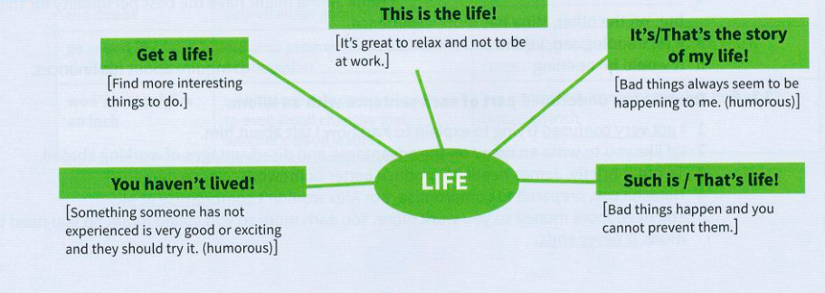

12
Conversational responses
A
Emphasis
| possible stimulus | you say | you mean |
|---|---|---|
| You can borrow my car tonight. | Thanks a million! | Thank you very much indeed. |
| Did you get the job you wanted? | No such luck! | You're disappointed you were not able to do something. |
| Can I go skiing with you and your friends this weekend? | The more, the merrier. | You're happy for others to join your group or activity. |
| She's a great teacher! | You can say that again! | You totally agree with someone. |
| Come on the roller coaster with me! | No way! | You do not want to do something. |
| I don't know how you can drive a car in London traffic! | There's nothing to it! | You think something is easy. |
| You could become a model. | Don't make me laugh! | You think something is unlikely. |
| It's nearly the end of the holiday already. | How time flies! | You are surprised at how quickly time has passed. |
| We bumped into John's teacher in Venice! | It's a small world. | You are surprised at a coincidence, e.g. meeting someone unexpectedly or discovering mutual friends. |
B
Indifference
| possible stimulus | you say | you mean |
|---|---|---|
| What do you think caused the problem? | It's neither here nor there what I think. | It is not very important. |
| Who do you think is to blame - the boss or the workers? | It's six of one and half a dozen of the other. | Two people or groups are equally responsible for a bad situation. |
| What do you think of Joe Hart's acting? | I can take it or leave it. | You do not hate something, but you don't particularly like it either. |
| Luke's got so many computer games. | I know. You name it, he's got it. | Anything you say or choose, e.g. You name it, he's done it. |
C
Life
